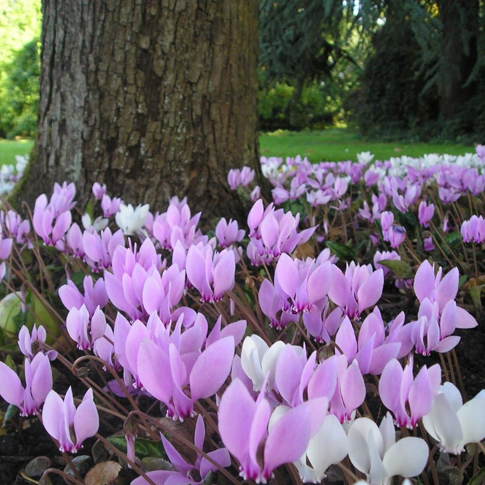
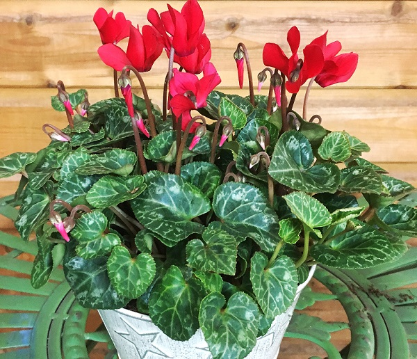
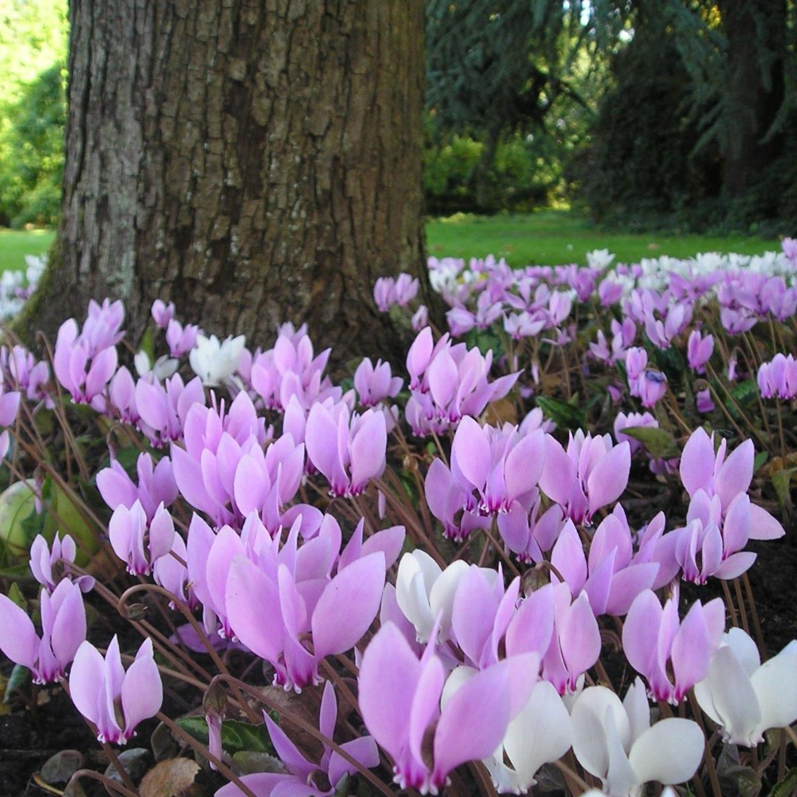
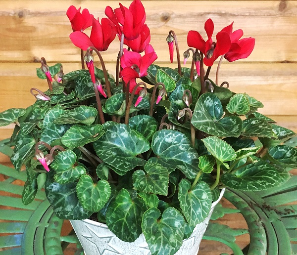

Common Name: Ivy Leaved Cyclaman
Botanical Name: Cyclamen-hederifolium
 



Other references
RHS
Gardenia
Gardeners' World
gardeningknowhow
Grow indoors or under glass in containers of loam-based compost with the tops of the tubers just above the soil surface. Maintain bright, filtered light with moderate humidity and a minimum winter temperature of 5 to 7°C. Avoid draughts and hot dry air. When in growth water moderately and apply a liquid fertiliser fortnightly. Reduce water after flowering and keep dry when dormant
Cyclamen are tuberous perennials with rounded, sometimes angular, leaves which are often attractively mottled. The nodding, characteristically shaped flowers have 5 reflexed and twisted petals, often with dark markings at the base.
- Propagate by seed, in darkness as soon as ripe at 12 to 15°C. Can be beneficial to soak seed for 10 hours prior to sowing
- Patio & Container Plants
- Propogate by seeds